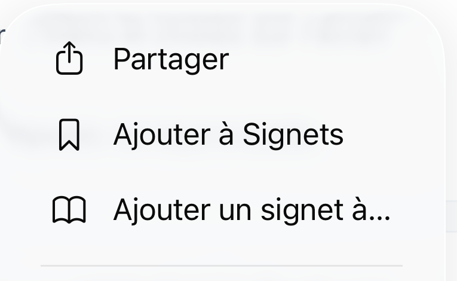
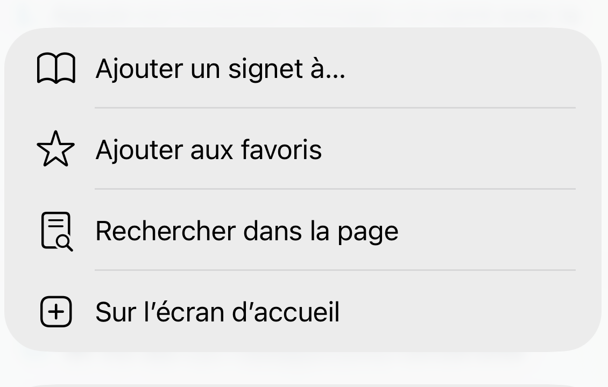
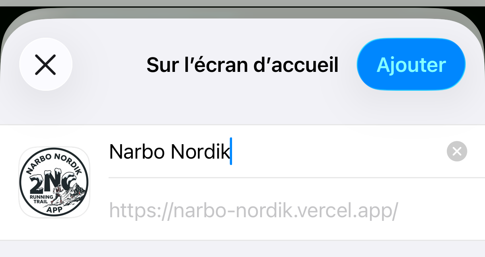

Sur iPhone et sur Android, pas à pas
Ce guide t'accompagne du lien reçu dans WhatsApp jusqu'à l'icône sur ton écran d'accueil, en passant par la création de ton compte. Compte dix minutes, téléphone en main. Rien n'est payant, rien n'est obligatoire.
L'appli du club n'est ni sur le Play Store, ni sur l'App Store. C'est un site web que l'on ajoute à son écran d'accueil, et c'est voulu : rien à télécharger, rien à mettre à jour, et l'accès reste réservé aux membres du club.
Deux choses en découlent. La première est une bonne nouvelle : tu peux te servir de l'appli tout de suite, dans ton navigateur, sans rien installer du tout. La seconde est à savoir : au moment de l'installation, ton téléphone peut afficher un message qui parle de sécurité. Ce n'est pas un virus, et la section 5 explique quoi faire.
ton téléphone, le lien envoyé dans le groupe WhatsApp, une adresse e-mail dont tu te souviens, et le code d'invitation du club, qui figure à la section 3.
C'est l'étape que tout le monde saute, et c'est celle qui fait échouer les autres. Le navigateur que tu utilises change tout.
Utilise Safari, la boussole bleue et blanche. Depuis Chrome ou Firefox, l'installation n'est tout simplement pas proposée.
Utilise Chrome, le rond de couleur avec du rouge, du jaune et du vert. Certains téléphones, les Samsung en particulier, ouvrent les liens avec leur propre navigateur. C'est ce qui provoque le message de sécurité dont on parle plus loin.
Dans le groupe WhatsApp, appuie sur le lien du club et garde le doigt appuyé une seconde.
Dans le menu qui s'ouvre, choisis Copier le lien.
Reviens à ton écran d'accueil et ouvre Safari sur iPhone, ou Chrome sur Android.
Appuie sur la barre d'adresse tout en haut, garde le doigt appuyé, choisis Coller, puis appuie sur la touche entrée de ton clavier.
La page du club s'affiche. Tu es au bon endroit.
L'appli est réservée aux membres du Narbo Nordik. La création de compte demande donc un code d'invitation, partagé par le club.
En bas de l'écran de connexion, appuie sur Rejoindre Narbo Nordik.
Renseigne ton prénom, ton nom, ton e-mail, et choisis un mot de passe d'au moins six caractères. Prends-en un dont tu te souviendras, ou note-le quelque part.
Dans le dernier champ, saisis le code d'invitation ci-dessus. Relis-le avant de valider.
Appuie sur S'inscrire. Tu entres directement dans l'appli, ton compte est créé.
Il n'y a pas de message de confirmation à valider, pas de lien à cliquer. Une fois inscrit, tu es dedans. Si tu attends un e-mail, tu attendras longtemps.
C'est normal et ça ne durera pas. Ta VMA et ton groupe d'entraînement sont renseignés par le coach, pas par toi. Préviens-le que tu viens de t'inscrire.
L'appli prend alors sa propre icône, s'ouvre en plein écran sans barre d'adresse, et tu n'as plus à retaper l'adresse. C'est du confort, pas une obligation : tout fonctionne déjà dans le navigateur.
Appuie sur les trois petits points en bas à droite de l'écran, puis sur Partager. Sur les iPhone plus anciens, le bouton Partager se trouve directement dans la barre du bas : c'est le carré avec une flèche vers le haut.
Fais défiler le menu si besoin, et choisis Sur l'écran d'accueil.
Appuie sur Ajouter, en haut à droite.



Sers-toi de l'appli une trentaine de secondes avant d'essayer. Chrome ne propose l'installation qu'une fois que tu t'en es servi un peu.
Appuie sur les trois petits points en haut à droite de l'écran.
Choisis Installer et créer un raccourci, puis Installer. Selon l'âge de ton téléphone, l'entrée peut s'appeler Installer l'application, ou Ajouter à l'écran d'accueil.
Confirme. L'icône du club apparaît sur ton écran.
Mon téléphone affiche un message qui parle de sécurité.
Ce n'est pas un virus, et ce n'est pas l'appli du club. Certains téléphones, les Samsung en particulier, fabriquent mal le raccourci et Android s'en méfie. Ferme le message, puis recommence depuis Chrome en suivant la section 2. N'appuie pas sur Installer quand même : ce n'est pas nécessaire ici, et ce n'est pas un réflexe à prendre.
Je ne trouve pas Installer dans le menu.
Deux raisons possibles. Soit tu n'as pas encore assez utilisé l'appli, laisse-lui trente secondes. Soit ton téléphone ne le propose pas. Dans ce cas, au même endroit dans les trois petits points, choisis Créer un raccourci puis Ajouter. Tu obtiens la même icône sur ton écran d'accueil, ça fonctionne sur tous les téléphones, et aucun message n'apparaît.
Je ne veux rien installer du tout.
Aucun souci, et c'est même le plus simple. Mets la page en favori avec l'étoile de ton navigateur. Tu retrouveras le club dans tes favoris, et tout fonctionne exactement pareil.
L'appli me redemande mes identifiants.
Ce sont l'e-mail et le mot de passe choisis à l'inscription. Pas le code d'invitation : il ne sert qu'une fois, au moment de créer ton compte.
Rien de tout ça ne marche.
Fais une photo de l'écran qui bloque et envoie-la dans le groupe du club, en précisant la marque de ton téléphone. On regarde ensemble, c'est souvent réglé en deux minutes.
Une page d'aide à l'installation est aussi consultable à tout moment sur narbo-nordik.vercel.app/installer